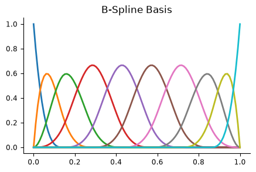
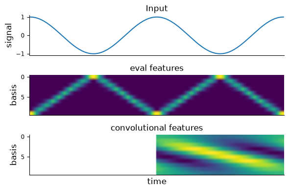
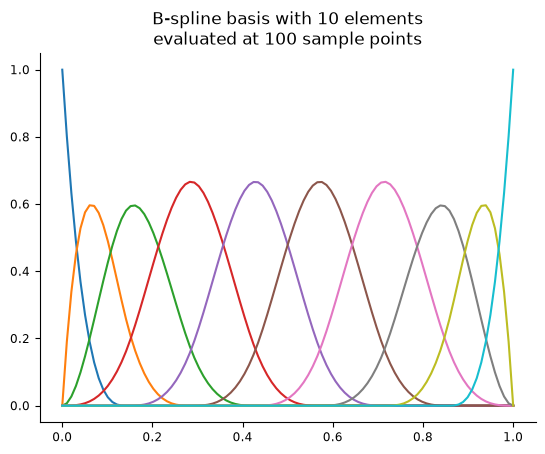
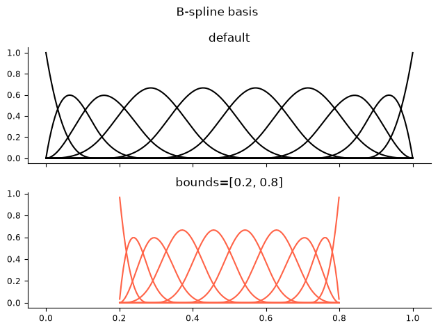

Download
Download this notebook: plot_01_1D_basis_function.ipynb!
Simple Basis Function#
Defining a 1D Basis Object#
We’ll start by defining a 1D basis function object of the type BSplineEval.
The hyperparameters needed to initialize this class are:
The number of basis functions, which should be a positive integer (required).
The order of the spline, which should be an integer greater than 1 (optional, default 4 for a cubic spline).
import matplotlib.pylab as plt
import numpy as np
import pynapple as nap
import nemos as nmo
# configure plots some
plt.style.use(nmo.styles.plot_style)
# Initialize hyperparameters
order = 4
n_basis = 10
# Define the 1D basis function object
bspline = nmo.basis.BSplineEval(n_basis_funcs=n_basis, order=order, label="bspline")
bspline
'bspline': BSplineEval(n_basis_funcs=10, order=4)In a Jupyter environment, please rerun this cell to show the HTML representation or trust the notebook.
On GitHub, the HTML representation is unable to render, please try loading this page with nbviewer.org.
Parameters
| n_basis_funcs | 10 | |
| label | 'bspline' | |
| order | 4 | |
| bounds | None | |
| fill_value | nan |
We provide the convenience method evaluate_on_grid for evaluating the basis on an equi-spaced grid of points that makes it easier to plot and visualize all basis elements.
# evaluate the basis on 100 sample points
x, y = bspline.evaluate_on_grid(100)
fig = plt.figure(figsize=(5, 3))
plt.plot(x, y, lw=2)
plt.title("B-Spline Basis")
Text(0.5, 1.0, 'B-Spline Basis')

Computing Features#
All bases in the nemos.basis module perform a transformation of one or more time series into a set of features. This operation is always carried out by the method compute_features.
We can group the bases into two categories depending on the type of transformation that compute_features applies:
Evaluation Bases: These bases use
compute_featuresto evaluate the basis directly, applying a non-linear transformation to the input. Classes in this category have names ending with “Eval,” such asBSplineEval.Convolution Bases: These bases use
compute_featuresto convolve the input with a kernel of basis elements, using awindow_sizespecified by the user. Classes in this category have names ending with “Conv”, such asBSplineConv.
Let’s see how these two categories operate:
eval_mode = nmo.basis.BSplineEval(n_basis_funcs=n_basis, label="eval")
conv_mode = nmo.basis.BSplineConv(n_basis_funcs=n_basis, window_size=100, label="conv")
# define an input
angles = np.linspace(0, np.pi*4, 201)
y = np.cos(angles)
# compute features
eval_feature = eval_mode.compute_features(y)
conv_feature = conv_mode.compute_features(y)
# plot results
fig, axs = plt.subplots( 3, 1, sharex="all", figsize=(6, 4))
# plot signal
axs[0].set_title("Input")
axs[0].plot(y)
axs[0].set_xticks([])
axs[0].set_ylabel("signal", fontsize=12)
# plot eval results
axs[1].set_title("eval features")
axs[1].imshow(eval_feature.T, aspect="auto")
axs[1].set_xticks([])
axs[1].set_ylabel("basis", fontsize=12)
# plot conv results
axs[2].set_title("convolutional features")
axs[2].imshow(conv_feature.T, aspect="auto")
axs[2].set_xlabel("time", fontsize=12)
axs[2].set_ylabel("basis", fontsize=12)
plt.tight_layout()

NaN-Padding
Convolution is performed in “valid” mode, and then NaN-padded. The default behavior
is padding left, which makes the output feature causal.
This is why the first half of the conv_feature is full of NaNs and appears as white.
If you want to learn more about convolutions, as well as how and when to change defaults
check out the tutorial on 1D convolutions.
Multi-dimensional inputs#
For inputs with more than one dimension, compute_features assumes the first axis represents samples. This is always valid for pynapple time series. For arrays, you can use numpy.transpose to re-arrange the axis if needed.
Eval Basis#
For Eval bases, compute_features evaluates the basis and outputs a 2D feature matrix.
basis = nmo.basis.RaisedCosineLinearEval(n_basis_funcs=5, label="multidim")
# generate a 3D array
inp = np.random.randn(50, 3, 2)
out = basis.compute_features(inp)
out.shape
(50, 30)
For each of the \(3 \times 2 = 6\) inputs, n_basis_funcs = 5 features are computed. These are concatenated on the second axis of the feature matrix, for a total of
\(3 \times 2 \times 5 = 30\) outputs.
This concatenation can be undone by the split_by_feature method of basis, which creates a dictionary with keys the labels of the basis and values a reshaped array.
basis.split_by_feature(out, axis=1)["multidim"].shape
(50, 3, 2, 5)
Conv Basis#
For Conv bases, compute_features convolves each input with n_basis_funcs kernels and outputs a 2D feature matrix.
basis = nmo.basis.RaisedCosineLinearConv(n_basis_funcs=5, window_size=6)
# compute_features to perform the convolution and concatenate
out = basis.compute_features(inp)
out.shape
(50, 30)
Note
This process is equivalent to performing the convolution separately with create_convolutional_predictor and then reshaping the output.
# setup the kernels
basis._set_kernel()
print(f"Kernel shape (window_size, n_basis_funcs): {basis.kernel_.shape}")
# apply the convolution
out_two_steps = convolve.create_convolutional_predictor(basis.kernel_, inp)
print(f"Convolution output shape: {out_two_steps.shape}")
# then reshape to 2D
out_two_steps = out_two_steps.reshape(
inp.shape[0], inp.shape[1] * inp.shape[2] * basis.n_basis_funcs
)
# check that this is equivalent to the output of compute_features
print(f"All matching: {np.array_equal(out_two_steps, out, equal_nan=True)}")
Kernel shape (window_size, n_basis_funcs): (6, 5)
Convolution output shape: (50, 3, 2, 5)
All matching: True
Plotting the Basis Function Elements#
We suggest visualizing the basis post-instantiation by evaluating each element on a set of equi-spaced sample points
and then plotting the result. The method Basis.evaluate_on_grid is designed for this, as it generates and returns
the equi-spaced samples along with the evaluated basis functions.
Note
The array returned by evaluate_on_grid(n_samples) is the same as the kernel that is used by the Conv bases initialized with window_sizes=n_samples!
# Call evaluate on grid on 100 sample points to generate samples and evaluate the basis at those samples
n_samples = 100
equispaced_samples, eval_basis = bspline.evaluate_on_grid(n_samples)
# Plot each basis element
plt.figure()
plt.title(f"B-spline basis with {eval_basis.shape[1]} elements\nevaluated at {eval_basis.shape[0]} sample points")
plt.plot(equispaced_samples, eval_basis)
plt.show()

The benefits of using evaluate_on_grid become particularly evident when working with multidimensional basis functions. You can find more details in the 2D basis elements plotting section.
Setting the basis support (Eval only)#
Sometimes, it is useful to restrict the basis to a fixed range. This can help manage outliers or ensure that
your basis covers the same range across multiple experimental sessions.
You can specify a range for the support of your basis by setting the bounds
parameter at initialization of Eval bases.
Evaluating the basis at any sample outside the bounds will result in a NaN.
bspline_range = nmo.basis.BSplineEval(n_basis_funcs=n_basis, order=order, bounds=(0.2, 0.8))
print("Evaluated basis:")
# 0.5 is within the support, 0.1 is outside the support
print(np.round(bspline_range.compute_features([0.5, 0.1]), 3))
Evaluated basis:
[[0. 0. 0. 0.021 0.47900003 0.47900003
0.021 0. 0. 0. ]
[ nan nan nan nan nan nan
nan nan nan nan]]
Let’s compare the default behavior of basis (estimating the range from the samples) with the fixed range basis.
samples = np.linspace(0, 1, 200)
fig, axs = plt.subplots(2,1, sharex=True)
plt.suptitle("B-spline basis ")
axs[0].plot(samples, bspline.compute_features(samples), color="k")
axs[0].set_title("default")
axs[1].plot(samples, bspline_range.compute_features(samples), color="tomato")
axs[1].set_title("bounds=[0.2, 0.8]")
plt.tight_layout()
